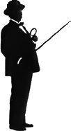

Hercule Poirot
Poirot estreou junto com Agatha Christie no livro O Misterioso Caso de Styles. Desde então, foram vários os livros em que Poirot esteve presente, sendo o último deles Cai o Pano. Hercule Poirot esteve presente também em muitos filmes. O primeiro a interpretá-lo foi Austin Trevor no começo dos anos 30 em três produções: O Assassinato de Roger Ackroyd, Black Coffee e Treze à Mesa.
{kind=link}
Outros atores que também interpretaram Hercule Poirot no cinema foram Peter Ustinov em Morte no Nilo, Morte na Praia, Encontro com a Morte e algumas pequenas séries de TV, Tony Randall em Os Crimes ABC no ano de 1965 e Albert Finney em O Assassinato no Expresso do Oriente que acabou ganhando o prémio de melhor filme da Academia onde os suspeitos eram atores mundialmente famosos como Sean Connery, Ingrid Bergman, John Gielgud e Lauren Bacall. Muitos fãs acreditam que David Suchet (de uma série de TV) foi o melhor ator que representou Poirot.
{kind=link}
{kind=link}
{kind=link}
{kind=link}
Mas Poirot será sempre lembrado pelas suas inconfundíveis características: a habilidade de resolver mistérios bastante complicados com a ajuda de suas “pequenas células cinzentas”, pelo seu bem tratado bigode, pela sua cabeça em forma de ovo e pela opinião que tem sobre si próprio. E falando em Hercule Poirot, não podemos deixar de falar sobre o Capitão Hastings. Com sua ingenuidade, Hastings foi um dos grandes companheiros de Poirot e o acompanhou em diversos casos.